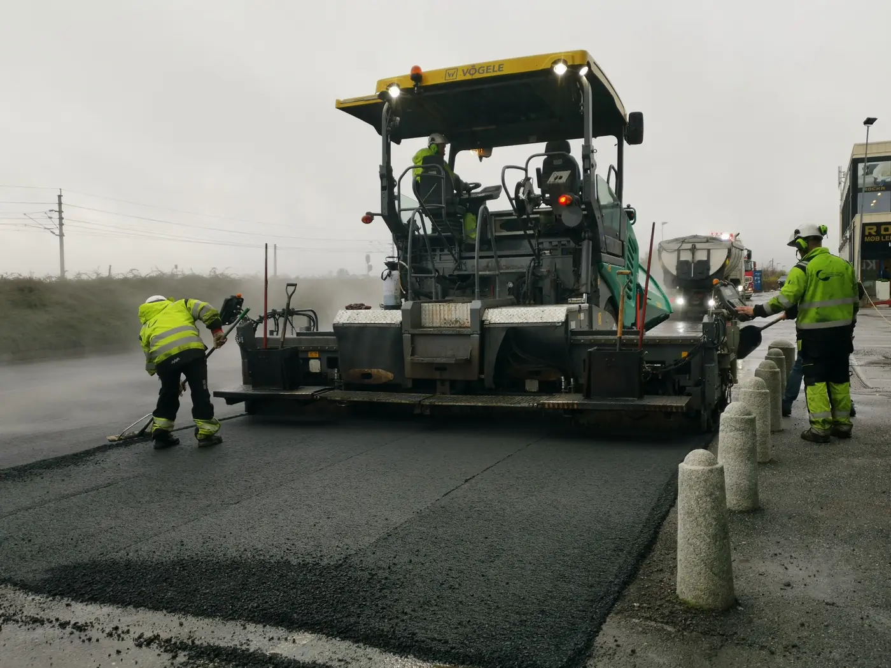
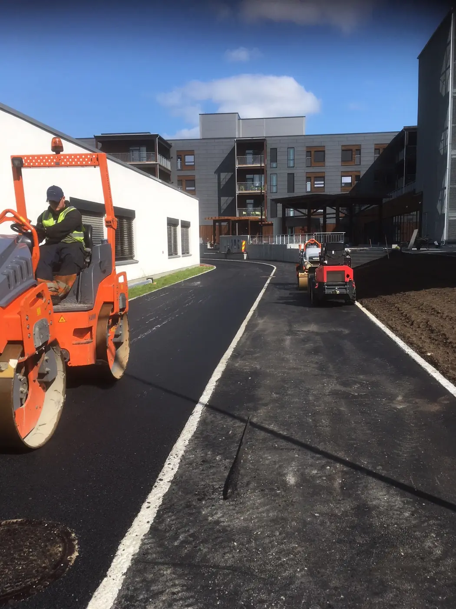

26 års erfaring · Grålum
Asfalt som holder.
Vi har lang erfaring med prosjekter for både private, bedrifter og det offentlige – og var først i Norge med å dokumentere fagkunnskapen gjennom fagbrev.
Startbank godkjent leverandørSentralt godkjentMan–fre 07–16
01 — Tjenester
Det vi hjelper med
Vi leverer asfaltarbeid til private, bedrifter, entreprenører og det offentlige.

02 — Godkjenninger
Dokumentert fagkunnskap
Borg Asfalt var først i Norge med å dokumentere fagkunnskapen gjennom å ta fagbrev. Det har vi bygd videre på, og er i dag en foretrukket samarbeidspartner for både private, bedrifter, entreprenører og det offentlige.
- Startbank – godkjent leverandør.
- Sentralt godkjent – kompetanse og KS-rutiner.
- Ryddige forhold – skatter og avgifter betalt.
03 — Prosessen
Fire steg
Vi avklarer omfang og tid før vi starter.
- Befaring
Vi ser på underlag, fall og vannavrenning.
- Tilbud
Uforpliktende, med hva som skal gjøres.
- Arbeid
Fresing, utlegging og komprimering.
- Overtakelse
Gjennomgang og rydding.
«Vi har lang erfaring med prosjekter for både private, bedrifter og det offentlige.»
Skal det asfalteres?
Kontakt oss for et uforpliktende tilbud. Vi ser på forholdene og sier hva jobben krever.